library(tidyverse)
library(dplyr)
library(ggplot2)
library(summarytools)
library(corrplot)Relatorio Estudo de Caso sobre DB Obesidade
Relatorio final do estudo sobre o conjunto de dados de obesidade, visando relacionar variavies que relacionam melhor o nivel de obesidade.
Quarto
Documento gerado utilizando RMd e Quarto para render em HTML, rodar o codigo apenas com o markdown possibilita mostra o codigo e o output
Inicio do tydling dos dados, fazendo uma renomeacao das features categoricas e agrupando os niveis de obesidade distintos em somente obesidade ou sobrepeso
dados <- read.csv("C:/Users/KABUM/Downloads/ObesityDataSet_raw_and_data_sinthetic.csv")
dim(dados)[1] 2111 17dados$obesidade_cat <- recode(dados$NObeyesdad,
"Insufficient_Weight" = "Abaixo",
"Normal_Weight" = "Normal",
"Overweight_Level_I" = "Sobrepeso",
"Overweight_Level_II" = "Sobrepeso",
"Obesity_Type_I" = "Obesidade",
"Obesity_Type_II" = "Obesidade",
"Obesity_Type_III" = "Obesidade"
)
names(dados)[12]<- "familia"Graficos Iniciais
p1 <- ggplot(dados, aes(fill = Gender, x = obesidade_cat)) +
geom_bar(position = "dodge", alpha = 0.8) +
theme_minimal() +
labs(title = "Taxa de Obesidade ",
subtitle = "Por genero ")
p1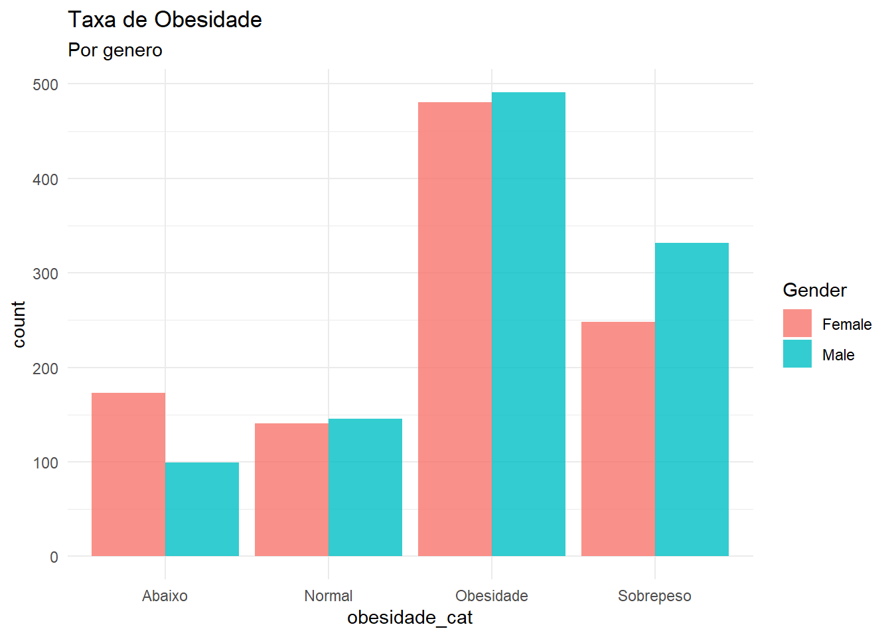
p2 <- ggplot(dados, aes(x = CALC, fill = obesidade_cat)) +
geom_bar(position = "dodge", alpha = 0.8) +
theme_minimal() +
labs(title = "Taxa de Obesidade ",
subtitle = "Por consumo de alcool ")
p2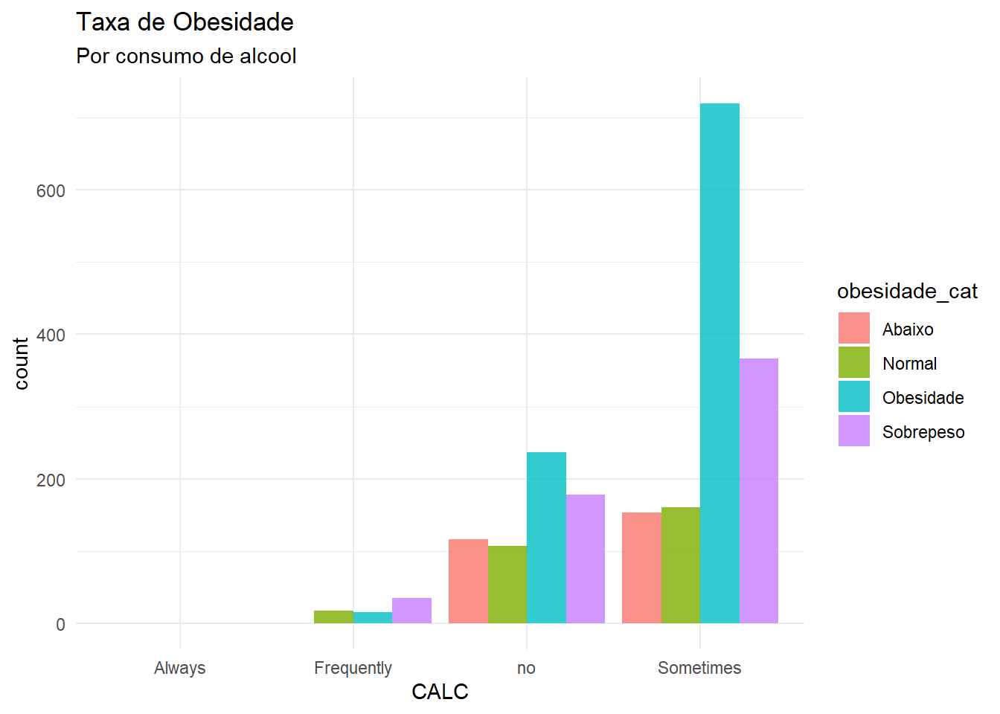
p3 <- ggplot(dados, aes(fill = SMOKE, x = obesidade_cat)) +
geom_bar(position = "dodge", alpha = 0.8) +
theme_minimal() +
labs(title = "Taxa de Obesidade ",
subtitle = "Por consumo de cigarro ")
p3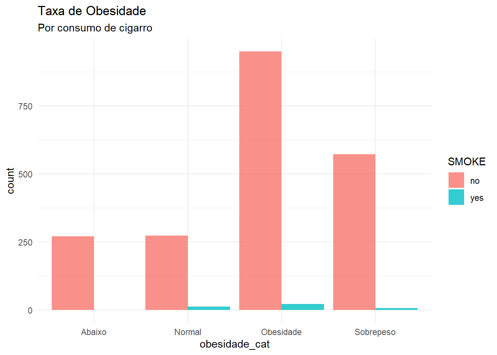
p4 <- ggplot(dados, aes(fill = familia, x = obesidade_cat)) +
geom_bar(position = "dodge", alpha = 0.8) +
theme_minimal() +
labs(title = "Taxa de Obesidade ",
subtitle = "Por histórico familiar")
p4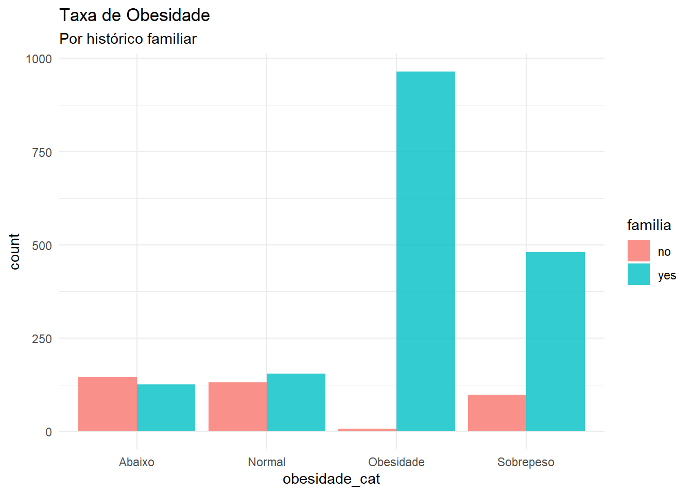
p5 <- ggplot(dados, aes(fill = FAVC, x = obesidade_cat)) +
geom_bar(position = "dodge", alpha = 0.8) +
theme_minimal() +
labs(title = "Taxa de Obesidade ",
subtitle = "Por Consumo de Comida calórica")
p5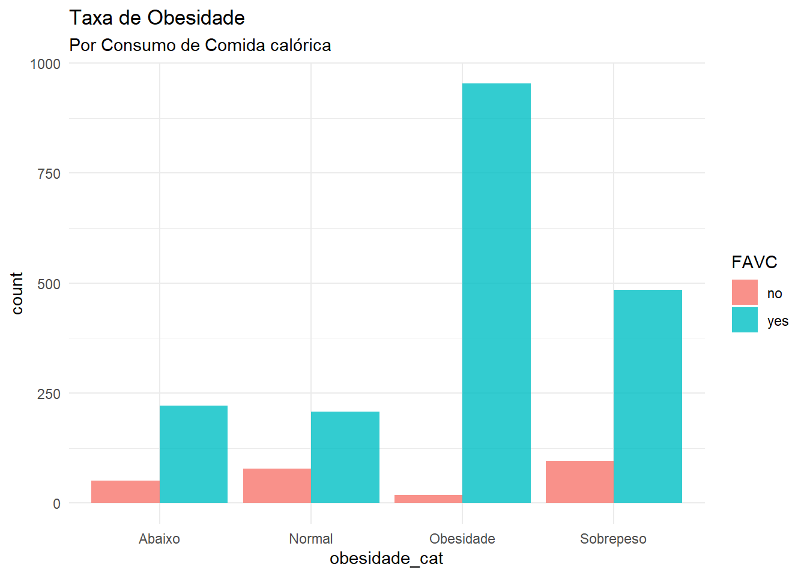
# Meios de transporte utilizados
p6 <- ggplot(dados, aes(fill = MTRANS, x = obesidade_cat)) +
geom_bar(position = "dodge", alpha = 0.8) +
theme_minimal() +
labs(title = "Obesidade",
subtitle = "Tipo de transporte")
p6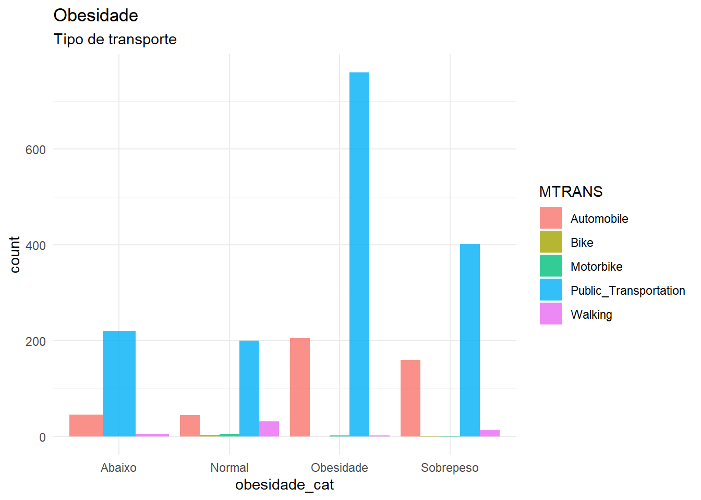
# Consumo entre refeicoes primarias
p7 <- ggplot(dados, aes(fill = CAEC, x = obesidade_cat)) +
geom_bar(position = "dodge", alpha = 0.8) +
theme_minimal() +
labs(title = "Obesidade",
subtitle = "Lanches entre refeições")
p7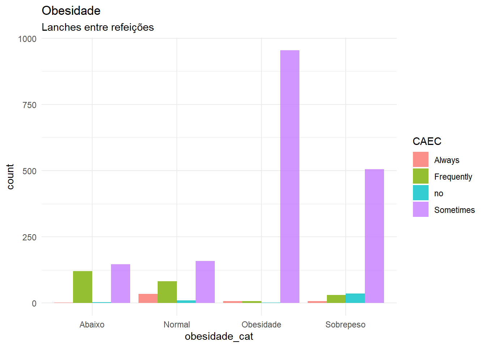
ggplot(dados, aes(x = obesidade_cat, y = Weight)) +
geom_boxplot() +
theme_minimal()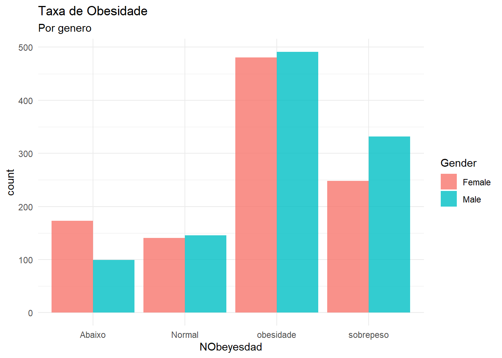
Aqui da pra ver como as categorias de peso se dividem entre homens e mulheres. Geralmente, essa distribuicao eh bem equilibrada e, pelo menos nesse banco de dados, o gênero nao eh o fator que mais pesa para definir a obesidade.
O historico familiar eh variáveis que mais impactam a relacao final com obesidade. A grande maioria das pessoas nas categorias de sobrepeso e obesidade tem gente na família com histórico parecido. A genética puxa bastante nesse fator.
Junto com a genetica, a alimentação eh o outro grande pilar deixando muito evidente o padrao alimentar de quem tá com sobrepeso ou obesidade.
ggplot(dados, aes(x = obesidade_cat, y = Weight)) +
geom_boxplot() +
theme_minimal()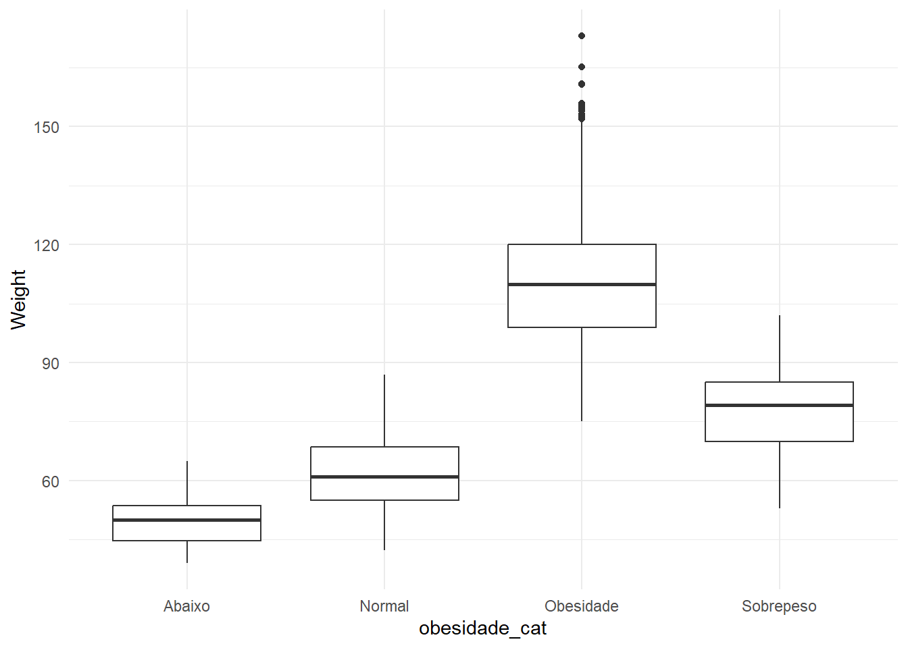
Esse boxplot mostra que a mediana do peso vai subindo gradualmente abaixo do peso até bater lá no alto no grupo da obesidade. Alem da grande presenca de outliers.
ggplot(dados, aes(x = obesidade_cat, y = CH2O)) +
geom_boxplot() +
theme_minimal()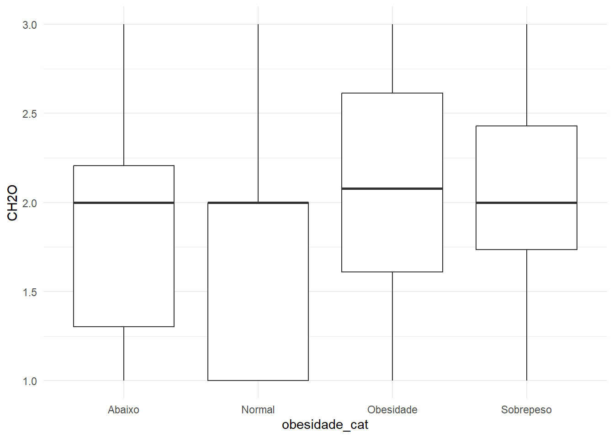
a agua nao parece ser um fator tao forte pra relacionar esses dados
ggplot(dados, aes(x = obesidade_cat, y = FAF)) +
geom_boxplot() +
theme_minimal()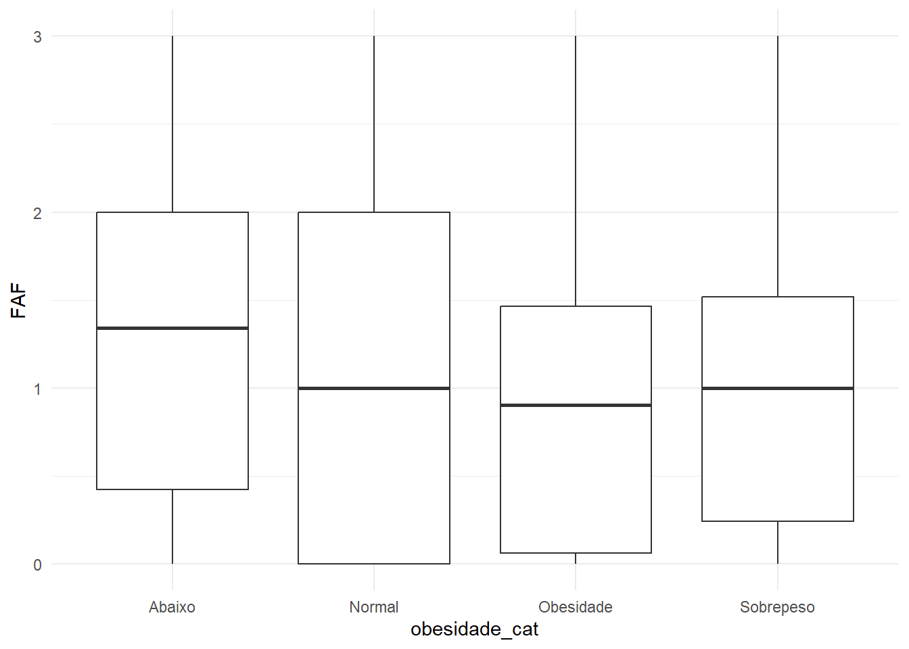
quem se exercita mais apresenta maior quantidade nos grupos abaixo e normal, colocando uma assimetria a esquerda, o que da pra levar como evidencia o fato de fazer atividade fisica manter um nivel de peso entra a normalidade
Conclusao
Pelos dados eh possivel ver que nao tem somente um fator que evidencia a distribuicao de obesidade. De modo geral(mais visual) é composto por uma forte predisposição genética (histórico familiar), combinada com um ambiente de modo alimentar (alta ingestão calórica) e baixo gasto energético (sedentarismo e transporte passivo).